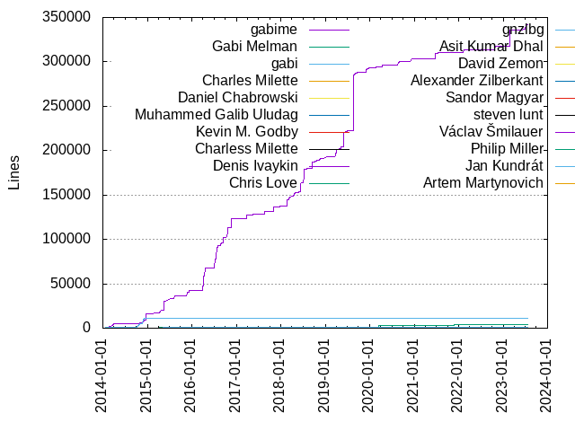

Authors
| Author | Commits (%) | + lines | - lines | First commit | Last commit | Age | Active days | # by commits |
|---|
| gabime | 1984 (47.08%) | 341596 | 291794 | 2014-01-26 | 2023-07-08 | 3449 days, 19:48:59 | 422 | 1 |
| Gabi Melman | 1270 (30.14%) | 3720 | 3605 | 2014-11-03 | 2023-07-20 | 3181 days, 9:57:20 | 593 | 2 |
| gabi | 128 (3.04%) | 11327 | 5219 | 2014-01-25 | 2015-01-28 | 368 days, 11:29:11 | 50 | 3 |
| Charles Milette | 37 (0.88%) | 576 | 581 | 2019-06-30 | 2022-11-12 | 1230 days, 21:06:43 | 14 | 4 |
| Daniel Chabrowski | 31 (0.74%) | 648 | 674 | 2018-02-11 | 2018-11-19 | 280 days, 22:13:21 | 10 | 5 |
| Muhammed Galib Uludag | 24 (0.57%) | 893 | 710 | 2021-06-27 | 2021-08-17 | 51 days, 2:41:55 | 5 | 6 |
| Kevin M. Godby | 23 (0.55%) | 1062 | 406 | 2016-02-24 | 2016-06-16 | 113 days, 3:41:22 | 8 | 7 |
| Charless Milette | 15 (0.36%) | 676 | 258 | 2021-11-13 | 2021-11-15 | 2 days, 4:21:11 | 2 | 8 |
| Denis Ivaykin | 12 (0.28%) | 294 | 131 | 2015-01-14 | 2015-05-10 | 116 days, 8:00:21 | 5 | 9 |
| Chris Love | 11 (0.26%) | 381 | 66 | 2021-08-25 | 2021-09-04 | 9 days, 22:57:21 | 4 | 10 |
| gnzlbg | 10 (0.24%) | 700 | 324 | 2015-05-11 | 2015-11-29 | 202 days, 4:12:07 | 2 | 11 |
| Asit Kumar Dhal | 10 (0.24%) | 316 | 3 | 2017-06-16 | 2017-08-04 | 48 days, 21:44:39 | 4 | 12 |
| David Zemon | 9 (0.21%) | 127 | 72 | 2019-05-17 | 2019-05-17 | 0:31:05 | 1 | 13 |
| Alexander Zilberkant | 9 (0.21%) | 189 | 136 | 2017-04-30 | 2017-05-18 | 17 days, 23:14:34 | 6 | 14 |
| Sandor Magyar | 8 (0.19%) | 49 | 41 | 2022-10-17 | 2022-10-19 | 1 day, 21:57:32 | 3 | 15 |
| steven lunt | 7 (0.17%) | 129 | 40 | 2021-03-24 | 2021-05-19 | 56 days, 1:28:09 | 3 | 16 |
| Václav Šmilauer | 7 (0.17%) | 149 | 22 | 2019-11-08 | 2019-11-09 | 1 day, 3:57:29 | 2 | 17 |
| Philip Miller | 7 (0.17%) | 48 | 31 | 2018-09-05 | 2019-01-24 | 140 days, 6:32:04 | 5 | 18 |
| Jan Kundrát | 7 (0.17%) | 20 | 9 | 2016-11-22 | 2019-10-30 | 1072 days, 1:40:15 | 5 | 19 |
| Artem Martynovich | 7 (0.17%) | 120 | 73 | 2015-07-13 | 2015-07-21 | 7 days, 21:49:31 | 3 | 20 |
These didn't make it to the top: Alexander Kiselev, offa, fooinha, fawdlstty, Wolfgang Petroschka, odeits, fegomes, doug1234, dkavolis, bandana2004, Ruslan Baratov, PedroRod, Matthias Moulin, Jean-Michaël Celerier, Daniel Mensinger, Amir Alperin, tt4g, daylanKifky, Vyacheslav, Vladislav Nepogodin, Vitaly Zaitsev, ThePhD, Rob Patro, Pablo Arias, Oleksii Mandrychenko, Nigel Stewart, Hugh Wang, David P. Sicilia, Chen Hayat, Berkus Decker, Adrian Antonana, weiy, ryan-rsm-mckenzie, possiblyhuman, ngugcx, lisr, k0zmo, fogo, dominicpoeschko, charles-david, Trond H Emaus, Sprite, Sergey Kovalevich, Rosen Penev, Philippe Serreault, Nazım Can Bedir, Michael R. Crusoe, Martin Vejdarski, Martin Green, Mario Emmenlauer, Luiz Siqueira, Kevin Slattery, Josh Junon, Joe Burzinski, Jerome Meyer, Jeeyong Um, Ivan Shynkarenka, Delgan, DanielChabrowski, Cristian Morales Vega, Alexander Zvyagin, zydxhs, xaqq, slapenko, seker, raphaelts3, panzhongxian, osx2000, orbea, nick, jspraul, espkk, dominic, davide, bergen, baishuai, Zyansheep, Zhiyuan "Jerry" Ma, Vadim Zeitlin, Tobias Pfeiffer, Timo Lange, Tamas Florin, Simon-Janos, Shintaro Seki, Shen-Ta Hsieh, Sam Lunt, Ryan Sherlock, Roocks Patrick (MTN PTT / External), Ron Rechenmacher, Remigiusz Kołłątaj, Raul Tambre, PM_Extra, Mikael Lund, Ľubomír Carik, Luis Angerstein, Light, LE GARREC Vincent, Konstantin Podsvirov, Joao Moreno, Jan Beich, JP Cimalando, JB_12, Issam E. Maghni, IIFEgit, Hui, Guo Xiao, Gaurav Vaidya, Florian Wörter, Elias Kosunen, Eli Boyarski, Dávid Bodor, Dmitriy Merkushov, David Schury, Dave Rigby, Daniel Binsmaier, Crunkle, Craig Tyler, Costin Manolache, Christof Kaufmann, Christian, Carsten Neumann, Bruce Mitchener, Benjamin Sergeant, Bailey Chittle, Arnaud Kapp, Anton Goryunov, Andrei-Florin BENCSIK, Alexander Shpilkin, Alexander Dalshov, Aengus.Jiang, Adi Lester, AMS21, 辛文, 璀境石, 听风, 刘耘呈, Могилин Виктор, Маркелов Максим, Łukasz Dańko, Ľubomír Carik, zyw1995ted@163.com, yunzhong, yisonPylkita, yhchen, yaoyuan1216, xvitaly, wonder-mice, wanghengbing, v.reshetnikov, unknown, sunlong169, shimaowo, sheldonlyr, semenov_gv, scribam, rwen2012, ruipacheco, risa2000, rajesh-p, qwark, myd7349, manuel-schiller, knowledge4igor, kitattyor, hvellyr, grzadr, gk6k6k, gab, eruiz, eao197, derekxgl, cookcocck, casperevan, amir zamani, albert-github, afshinpir, Zor X.L, Zhi Sun, Zeus James, Your Full Name, X Nephila, Vitor Alves, Vitaly Lipatov, Vasiliy Kulikov, Unknown, Ulmo-F, Tony Narlock, Tobias Ulvgard, Tim Blechmann, Thiago Bastos, Therenall, Tennn, Takayama Fumihiko, Surfy Cui, Subenlele, Steven Hangger, Steven Cartmell, Stephane Janel, Stefan Broekman, Sidyhe, Sergey Fedorov, Sergey Alexandrov, Sebastian Messmer, Sean Farrell, Sam Brkopac, SUPERustam, SCC/楊志璿, Ryan Carmichael, Ruslan Mullakhmetov, Rupert Steel, Romain Thomas, Romain Roffé, Romain Pokrzywka, Robin Lindén, Radu Popescu, Puneet Matharu, Prateek Chokse, Pranav, Ponnuvel Palaniyappan, Pixel, Pius Raeder, Piotr Barejko, Philip Salzmann, PeterTh, Paul Kunysch, Paul, Onno Broekmans, Olivier LDff, Nicolas Benes, Nick White, Nandan V, NaDDu, Máté Ferenc Nagy-Egri, Montellese, Mohammad Ali, Mike Lezhnin, Michael Mullin, Mattias Jernberg, Mattias Fornander, Matthias Schoepfer, Matt Crane, Matan Nassau, Martin Krammer, Markus Neugebauer, Mark Niebur, Mark Koester, Maciej Gajewski, Luke Novey, Luigi Baldoni, Lucas Rangit MAGASWERAN, Lucas CHOLLET, Loren Burkholder, Li Z, Leonid Pospelov, Leon Brands, Lectem, Kyuheon Kim, Klaim (Joël Lamotte), Kirill Leyfer, Khem Raj, Kelvin Hu, Keith Williams, Kasra Hashemi, Karl Liu, Jorge Bellon-Castro, Jonas Wittbrodt, John Armstrong, John Andre Hestad, Jiang Y, Jeremy Nimmer, Jens Breitbart, Jason Beach, Jan Niklas Hasse, Jan Engelhardt, James Ruan, Jakub Neruda, Jaakko Rantala, Ivan Grokhotkov, Ilya Kulakov, Hugo Bonnet, Hector PHARAM, Hai Feng Kao, H1X4, György Katona, Gustav, Graydon Hoare, George Gaydarov, Gabriel Vaduva, Francois Chabot, Francesco Biscani, Force Charlie, Florin Iucha, Florian Pigorsch, Fernando Gomes, Felix Gündling, FIlip Demski, Eyal Rozenberg, Emad William Farag, Elmar Pruesse, El El, Dominik Krümpelmann, Dmytro Milinevskyi, Dirk Eddelbuettel, Dimitris Apostolou, DimRochette, Devansh D, Denis Blank, David Yip, David Roman, Darby Payne, Daniil, Damien Zammit, Cyres, Craig Andrews, Colin Duquesnoy, Cleroth, Christian Panov, Chris Mc, Chris Hiszpanski, Charles Hardin, Carlos Gomes Martinho, CChuancey, Budo Zindovic, Brett Cornwall, Bernd Ritter, Benjamin Schindler, Ben Ridder, Bartosz Taczała, Bartlomiej Janowski, Barrett, Bak, Jin Hyeong, BVonk, Avraham Shukron, ArnaudBienner, Arnar Bjarni Arnarson, Anuradha Dissanayake, Andrey Glebov, Andrey Bugaevskiy, Andre Haupt, Amir Cohen, Alok Priyadarshi, Alexei Pastuchov, Alexandre Pereira Nunes, Alexandr Dubovikov, Alexander Zaitsev, Alexander Shishenko, Aimin, Ahmed Yarub Hani Al Nuaimi, Ahmed Sagdati, Adrien Bertrand, Adam Calhoon, Acretock
Only top 20 authors shown
Only top 20 authors shown
| Month | Author | Commits (%) | Next top 5 | Number of authors |
|---|
| 2023-07 | gabime | 10 (62.50% of 16) | Gabi Melman, xvitaly, qwark, Lucas Rangit MAGASWERAN | 5 |
| 2023-06 | gabime | 20 (57.14% of 35) | Gabi Melman, Ulmo-F, Simon-Janos, Jiang Y, CChuancey | 7 |
| 2023-05 | Gabi Melman | 7 (50.00% of 14) | gabime, Kasra Hashemi, Eli Boyarski, Bernd Ritter | 5 |
| 2023-04 | Sergey Fedorov | 1 (33.33% of 3) | James Ruan, Gabi Melman | 3 |
| 2023-03 | Gabi Melman | 5 (33.33% of 15) | Vitaly Zaitsev, Luis Angerstein, Bailey Chittle, 听风, SCC/楊志璿 | 7 |
| 2023-02 | Gabi Melman | 9 (52.94% of 17) | gabime, 璀境石, afshinpir, Zeus James, Vitaly Zaitsev | 8 |
| 2023-01 | Gabi Melman | 7 (50.00% of 14) | espkk, albert-github, Robin Lindén, Mohammad Ali, Khem Raj | 8 |
| 2022-12 | zydxhs | 1 (14.29% of 7) | Vasiliy Kulikov, NaDDu, György Katona, Gabi Melman, Darby Payne | 7 |
| 2022-11 | Gabi Melman | 4 (44.44% of 9) | zydxhs, Sprite, Romain Pokrzywka, Eli Boyarski, Charles Milette | 6 |
| 2022-10 | gabime | 18 (50.00% of 36) | Sandor Magyar, Gabi Melman, 刘耘呈, offa, Puneet Matharu | 7 |
| 2022-09 | offa | 5 (35.71% of 14) | Gabi Melman, Nigel Stewart, Nicolas Benes | 4 |
| 2022-08 | Gabi Melman | 2 (66.67% of 3) | Loren Burkholder | 2 |
| 2022-07 | Gabi Melman | 5 (55.56% of 9) | Simon-Janos, Shen-Ta Hsieh, Lucas CHOLLET, Hector PHARAM | 5 |
| 2022-06 | Gabi Melman | 6 (54.55% of 11) | bergen, cookcocck, Rosen Penev, Alexandre Pereira Nunes | 5 |
| 2022-05 | Gabi Melman | 11 (37.93% of 29) | Kevin Slattery, Jeeyong Um, panzhongxian, gabime, Timo Lange | 11 |
| 2022-04 | Charles Milette | 10 (47.62% of 21) | Gabi Melman, gabime, espkk, Delgan, Aengus.Jiang | 6 |
| 2022-03 | Gabi Melman | 4 (44.44% of 9) | Delgan, risa2000, Andrey Bugaevskiy, Adam Calhoon | 5 |
| 2022-02 | gabime | 10 (58.82% of 17) | Gabi Melman, Surfy Cui, Kyuheon Kim, Adrien Bertrand | 5 |
| 2022-01 | Gabi Melman | 6 (40.00% of 15) | doug1234, Sprite, Pixel, Leon Brands, Dave Rigby | 6 |
| 2021-12 | Gabi Melman | 22 (52.38% of 42) | gabime, Vladislav Nepogodin, Roocks Patrick (MTN PTT / External), Philippe Serreault, Tim Blechmann | 7 |
| 2021-11 | Gabi Melman | 24 (34.78% of 69) | Charless Milette, gabime, Charles Milette, lisr, seker | 12 |
| 2021-10 | sunlong169 | 1 (25.00% of 4) | semenov_gv, Nigel Stewart, Gabi Melman | 4 |
| 2021-09 | gabime | 6 (24.00% of 25) | Gabi Melman, Chris Love, jspraul, Cristian Morales Vega, Маркелов Максим | 8 |
| 2021-08 | Gabi Melman | 21 (48.84% of 43) | Wolfgang Petroschka, Chris Love, dkavolis, Dmitriy Merkushov, 辛文 | 12 |
| 2021-07 | gabime | 24 (39.34% of 61) | Gabi Melman, Muhammed Galib Uludag, dkavolis, Stephane Janel, Pranav | 7 |
| 2021-06 | Gabi Melman | 31 (49.21% of 63) | Muhammed Galib Uludag, gabime, zyw1995ted@163.com, Sprite, LE GARREC Vincent | 7 |
| 2021-05 | Gabi Melman | 7 (35.00% of 20) | steven lunt, Vadim Zeitlin, Rosen Penev, Mikael Lund, Luke Novey | 7 |
| 2021-04 | Gabi Melman | 10 (58.82% of 17) | gabime, Steven Hangger, SUPERustam, Nandan V, Matthias Moulin | 8 |
| 2021-03 | Gabi Melman | 16 (55.17% of 29) | gabime, steven lunt, Ryan Sherlock, Romain Roffé, Hugo Bonnet | 8 |
| 2021-02 | Gabi Melman | 23 (63.89% of 36) | fawdlstty, Issam E. Maghni, Unknown, Prateek Chokse, Máté Ferenc Nagy-Egri | 8 |
| 2021-01 | Charles Milette | 9 (45.00% of 20) | Gabi Melman, Gaurav Vaidya, Kelvin Hu, Graydon Hoare, Christian Panov | 6 |
| 2020-12 | Gabi Melman | 7 (31.82% of 22) | Amir Alperin, gabime, ryan-rsm-mckenzie, shimaowo, dominic | 7 |
| 2020-11 | Gabi Melman | 6 (54.55% of 11) | Могилин Виктор, dkavolis, Jonas Wittbrodt, Francesco Biscani, ArnaudBienner | 6 |
| 2020-10 | Gabi Melman | 3 (50.00% of 6) | Christof Kaufmann, kitattyor | 3 |
| 2020-09 | gabime | 26 (72.22% of 36) | Gabi Melman, Dirk Eddelbuettel | 3 |
| 2020-08 | gabime | 12 (54.55% of 22) | Gabi Melman, gk6k6k, Piotr Barejko, Dominik Krümpelmann | 5 |
| 2020-07 | Gabi Melman | 8 (66.67% of 12) | Raul Tambre, Eyal Rozenberg, Craig Andrews | 4 |
| 2020-06 | Gabi Melman | 9 (42.86% of 21) | gabime, Tamas Florin, Konstantin Podsvirov, Joe Burzinski, Leonid Pospelov | 6 |
| 2020-05 | gabime | 13 (43.33% of 30) | Gabi Melman, IIFEgit, Joe Burzinski, Jaakko Rantala, Bruce Mitchener | 6 |
| 2020-04 | Gabi Melman | 43 (50.59% of 85) | gabime, Ron Rechenmacher, Montellese, FIlip Demski, Bruce Mitchener | 6 |
| 2020-03 | Gabi Melman | 43 (43.88% of 98) | gabime, ngugcx, Trond H Emaus, Martin Vejdarski, Zyansheep | 10 |
| 2020-02 | Gabi Melman | 37 (38.54% of 96) | gabime, bandana2004, Vyacheslav, tt4g, dominicpoeschko | 15 |
| 2020-01 | Gabi Melman | 4 (36.36% of 11) | weiy, Łukasz Dańko, X Nephila, Vitaly Lipatov, Carlos Gomes Martinho | 6 |
| 2019-12 | gabime | 75 (71.43% of 105) | Gabi Melman, Mike Lezhnin, Craig Tyler, Ahmed Sagdati | 5 |
| 2019-11 | gabime | 44 (67.69% of 65) | Gabi Melman, Václav Šmilauer, Zhi Sun, Paul Kunysch, Luigi Baldoni | 9 |
| 2019-10 | gabime | 32 (57.14% of 56) | Gabi Melman, Jan Kundrát, Andrei-Florin BENCSIK, Michael Mullin, Matthias Schoepfer | 8 |
| 2019-09 | gabime | 72 (61.54% of 117) | Gabi Melman, orbea, Tobias Pfeiffer, Jan Beich, Christian | 9 |
| 2019-08 | gabime | 88 (77.19% of 114) | Gabi Melman, Zhiyuan "Jerry" Ma, Matthias Moulin, AMS21 | 5 |
| 2019-07 | gabime | 52 (45.61% of 114) | Gabi Melman, Charles Milette, k0zmo, Matthias Moulin, Daniel Mensinger | 13 |
| 2019-06 | gabime | 71 (61.21% of 116) | Gabi Melman, Charles Milette, Daniel Mensinger, casperevan, Shintaro Seki | 10 |
| 2019-05 | gabime | 64 (60.95% of 105) | Gabi Melman, David Zemon, Philip Salzmann | 4 |
| 2019-04 | gabime | 36 (76.60% of 47) | Gabi Melman, Martin Green, Daniel Binsmaier, Martin Krammer, Jan Niklas Hasse | 6 |
| 2019-03 | gabime | 56 (82.35% of 68) | Gabi Melman, Alexander Zvyagin, Florian Wörter, tt4g, Ponnuvel Palaniyappan | 6 |
| 2019-02 | Gabi Melman | 8 (53.33% of 15) | DanielChabrowski, charles-david, Romain Thomas, Mattias Fornander, Martin Green | 7 |
| 2019-01 | gabime | 12 (30.77% of 39) | Gabi Melman, Philip Miller, possiblyhuman, charles-david, scribam | 11 |
| 2018-12 | gabime | 8 (40.00% of 20) | Gabi Melman, David P. Sicilia, Jerome Meyer, Carsten Neumann, Budo Zindovic | 6 |
| 2018-11 | gabime | 70 (74.47% of 94) | Gabi Melman, Pablo Arias, Daniel Chabrowski, David P. Sicilia, Adi Lester | 7 |
| 2018-10 | gabime | 69 (79.31% of 87) | Gabi Melman, Jerome Meyer, Hui, rwen2012, Tobias Ulvgard | 7 |
| 2018-09 | gabime | 37 (61.67% of 60) | Gabi Melman, Philip Miller, Sergey Alexandrov, Elmar Pruesse, Alexander Dalshov | 6 |
| 2018-08 | gabime | 53 (55.79% of 95) | Gabi Melman, Daniel Chabrowski, Luiz Siqueira, slapenko, yhchen | 11 |
| 2018-07 | gabime | 107 (78.10% of 137) | Gabi Melman, baishuai | 3 |
| 2018-06 | gabime | 37 (94.87% of 39) | Gabi Melman | 2 |
| 2018-05 | gabime | 22 (81.48% of 27) | Gabi Melman | 2 |
| 2018-04 | gabime | 52 (85.25% of 61) | Gabi Melman | 2 |
| 2018-03 | gabime | 27 (57.45% of 47) | Gabi Melman, Alexander Kiselev, fegomes, Thiago Bastos | 5 |
| 2018-02 | gabime | 18 (36.73% of 49) | Daniel Chabrowski, Gabi Melman, grzadr, Fernando Gomes, Emad William Farag | 8 |
| 2018-01 | Gabi Melman | 6 (35.29% of 17) | Josh Junon, gabime, Joao Moreno, yisonPylkita, fegomes | 8 |
| 2017-12 | gabime | 14 (42.42% of 33) | Gabi Melman, Ľubomír Carik, Stefan Broekman, Force Charlie, Alexandr Dubovikov | 6 |
| 2017-11 | gabime | 20 (57.14% of 35) | Gabi Melman, daylanKifky, JP Cimalando, Costin Manolache, Subenlele | 6 |
| 2017-10 | Gabi Melman | 7 (30.43% of 23) | gabime, Berkus Decker, fogo, manuel-schiller, knowledge4igor | 8 |
| 2017-09 | Gabi Melman | 3 (60.00% of 5) | John Andre Hestad, Jason Beach | 3 |
| 2017-08 | Gabi Melman | 7 (38.89% of 18) | Adrian Antonana, gabime, Lectem, George Gaydarov, El El | 7 |
| 2017-07 | Gabi Melman | 3 (50.00% of 6) | Matt Crane, Gabriel Vaduva, Asit Kumar Dhal | 4 |
| 2017-06 | Asit Kumar Dhal | 8 (36.36% of 22) | Gabi Melman, Remigiusz Kołłątaj, sheldonlyr, gabime, Cyres | 8 |
| 2017-05 | gabime | 22 (41.51% of 53) | Gabi Melman, Alexander Zilberkant, ThePhD, Tennn, Elias Kosunen | 7 |
| 2017-04 | Gabi Melman | 8 (47.06% of 17) | odeits, Jean-Michaël Celerier, Sidyhe, Amir Cohen, Alexander Zilberkant | 6 |
| 2017-03 | Gabi Melman | 8 (36.36% of 22) | gabime, Oleksii Mandrychenko, odeits, Takayama Fumihiko, Elias Kosunen | 9 |
| 2017-02 | Gabi Melman | 11 (68.75% of 16) | Jean-Michaël Celerier, Ľubomír Carik, gabime | 4 |
| 2017-01 | Gabi Melman | 3 (75.00% of 4) | Bartosz Taczała | 2 |
| 2016-12 | gabime | 10 (55.56% of 18) | Gabi Melman, PM_Extra | 3 |
| 2016-11 | gabime | 6 (28.57% of 21) | Gabi Melman, Jan Kundrát, Chen Hayat, osx2000, Onno Broekmans | 6 |
| 2016-10 | gabime | 7 (46.67% of 15) | Gabi Melman, Guo Xiao, Chen Hayat | 4 |
| 2016-09 | gabime | 17 (50.00% of 34) | Gabi Melman, Hugh Wang, davide, amir zamani, Therenall | 6 |
| 2016-08 | gabime | 21 (46.67% of 45) | Gabi Melman, Nazım Can Bedir, Sam Brkopac, Cleroth | 5 |
| 2016-07 | gabime | 30 (76.92% of 39) | Gabi Melman, Tony Narlock | 3 |
| 2016-06 | gabime | 6 (37.50% of 16) | Gabi Melman, Kevin M. Godby | 3 |
| 2016-05 | Kevin M. Godby | 12 (35.29% of 34) | Gabi Melman, gabime, hvellyr, eao197, Philippe Serreault | 7 |
| 2016-04 | gabime | 13 (52.00% of 25) | Gabi Melman, Anton Goryunov, unknown, Nick White | 5 |
| 2016-03 | gabime | 16 (50.00% of 32) | Gabi Melman, PedroRod, Kevin M. Godby, Alexander Dalshov | 5 |
| 2016-02 | Kevin M. Godby | 3 (42.86% of 7) | Gabi Melman, gabime, Sebastian Messmer | 4 |
| 2016-01 | Gabi Melman | 3 (37.50% of 8) | gabime, wonder-mice, derekxgl, Andrey Glebov | 5 |
| 2015-12 | gabime | 17 (70.83% of 24) | Gabi Melman, Sergey Kovalevich | 3 |
| 2015-11 | gabime | 15 (68.18% of 22) | Gabi Melman, yaoyuan1216, gnzlbg | 4 |
| 2015-10 | Gabi Melman | 3 (60.00% of 5) | Chris Hiszpanski, Alexander Shishenko | 3 |
| 2015-09 | Gabi Melman | 7 (46.67% of 15) | Ruslan Baratov, David Schury, gabime | 4 |
| 2015-08 | gabime | 6 (50.00% of 12) | Gabi Melman, Rob Patro, Radu Popescu | 4 |
| 2015-07 | Artem Martynovich | 7 (53.85% of 13) | Gabi Melman, gabime, Ilya Kulakov | 4 |
| 2015-06 | nick | 2 (66.67% of 3) | Gabi Melman | 2 |
| 2015-05 | gabime | 22 (44.90% of 49) | Gabi Melman, gnzlbg, Denis Ivaykin, Rob Patro | 5 |
| 2015-04 | gabime | 27 (67.50% of 40) | Gabi Melman | 2 |
| 2015-03 | gabime | 5 (35.71% of 14) | Gabi Melman, Ivan Shynkarenka, Ruslan Mullakhmetov | 4 |
| 2015-02 | gabime | 11 (84.62% of 13) | Gabi Melman | 2 |
| 2015-01 | Gabi Melman | 17 (38.64% of 44) | gabime, gabi, Denis Ivaykin, ruipacheco, Rupert Steel | 7 |
| 2014-12 | Gabi Melman | 88 (43.35% of 203) | gabime, gabi, fooinha, Rob Patro, xaqq | 9 |
| 2014-11 | Gabi Melman | 66 (44.30% of 149) | gabime, gabi, Arnaud Kapp, xaqq, Paul | 7 |
| 2014-10 | gabi | 43 (72.88% of 59) | gabime | 2 |
| 2014-09 | gabi | 1 (100.00% of 1) | | 1 |
| 2014-08 | gabi | 1 (100.00% of 1) | | 1 |
| 2014-05 | gabime | 15 (83.33% of 18) | gabi | 2 |
| 2014-03 | gabime | 64 (95.52% of 67) | gabi | 2 |
| 2014-02 | gabime | 20 (100.00% of 20) | | 1 |
| 2014-01 | gabime | 20 (74.07% of 27) | gabi, gab | 3 |
| Year | Author | Commits (%) | Next top 5 | Number of authors |
|---|
| 2023 | Gabi Melman | 42 (36.84% of 114) | gabime, Vitaly Zaitsev, Luis Angerstein, Bailey Chittle, 璀境石 | 33 |
| 2022 | Gabi Melman | 60 (33.33% of 180) | gabime, Charles Milette, Sandor Magyar, offa, doug1234 | 49 |
| 2021 | Gabi Melman | 191 (44.52% of 429) | gabime, Muhammed Galib Uludag, Charles Milette, Charless Milette, Chris Love | 69 |
| 2020 | Gabi Melman | 188 (41.78% of 450) | gabime, bandana2004, Amir Alperin, Vyacheslav, weiy | 55 |
| 2019 | gabime | 602 (62.64% of 961) | Gabi Melman, David Zemon, Charles Milette, Václav Šmilauer, Philip Miller | 60 |
| 2018 | gabime | 502 (68.49% of 733) | Gabi Melman, Daniel Chabrowski, Alexander Kiselev, fegomes, Pablo Arias | 39 |
| 2017 | Gabi Melman | 93 (36.61% of 254) | gabime, Asit Kumar Dhal, Alexander Zilberkant, odeits, Jean-Michaël Celerier | 46 |
| 2016 | gabime | 137 (46.60% of 294) | Gabi Melman, Kevin M. Godby, PedroRod, Hugh Wang, Chen Hayat | 30 |
| 2015 | gabime | 116 (45.67% of 254) | Gabi Melman, Denis Ivaykin, gnzlbg, gabi, Artem Martynovich | 21 |
| 2014 | gabime | 253 (46.42% of 545) | Gabi Melman, gabi, fooinha, xaqq, Rob Patro | 13 |
| Domains | Total (%) |
|---|
| gmail.com | 3377 (80.14%) |
|---|
| bezeqint.net | 264 (6.26%) |
|---|
| mgail.com | 84 (1.99%) |
|---|
| users.noreply.github.com | 68 (1.61%) |
|---|
| gmail.comx | 32 (0.76%) |
|---|
| tnctr.com | 24 (0.57%) |
|---|
| godby.org | 23 (0.55%) |
|---|
| yahoo.com | 13 (0.31%) |
|---|
| hotmail.com | 13 (0.31%) |
|---|
| outlook.com | 11 (0.26%) |
|---|